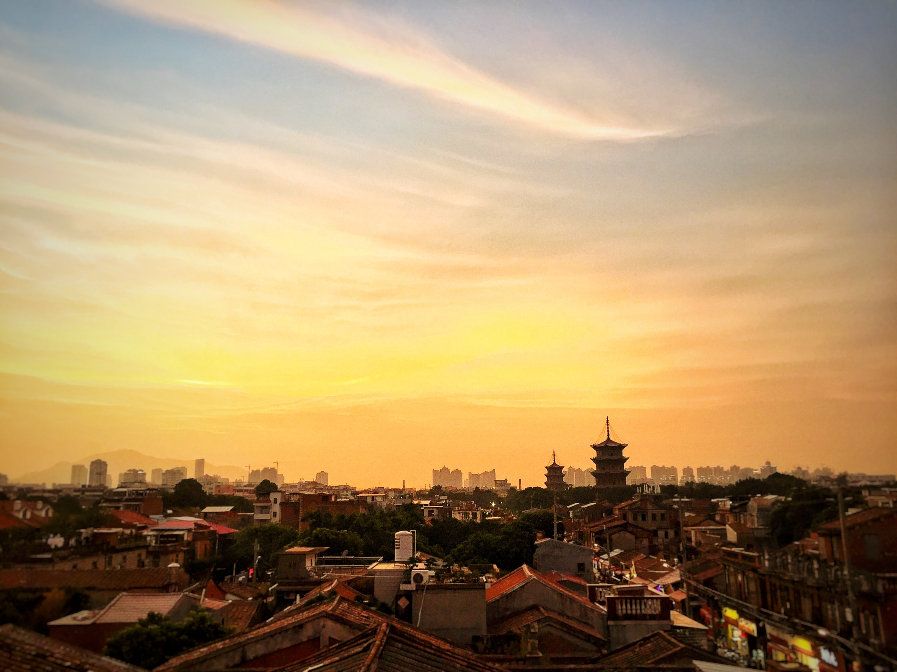
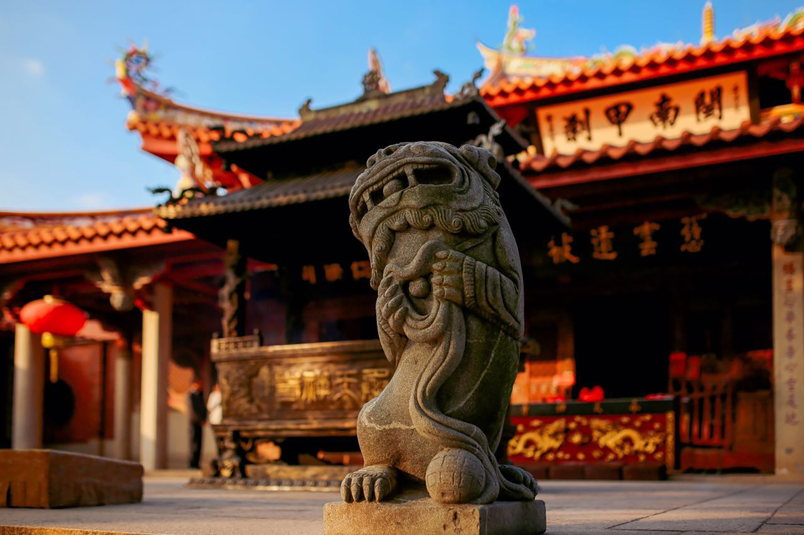
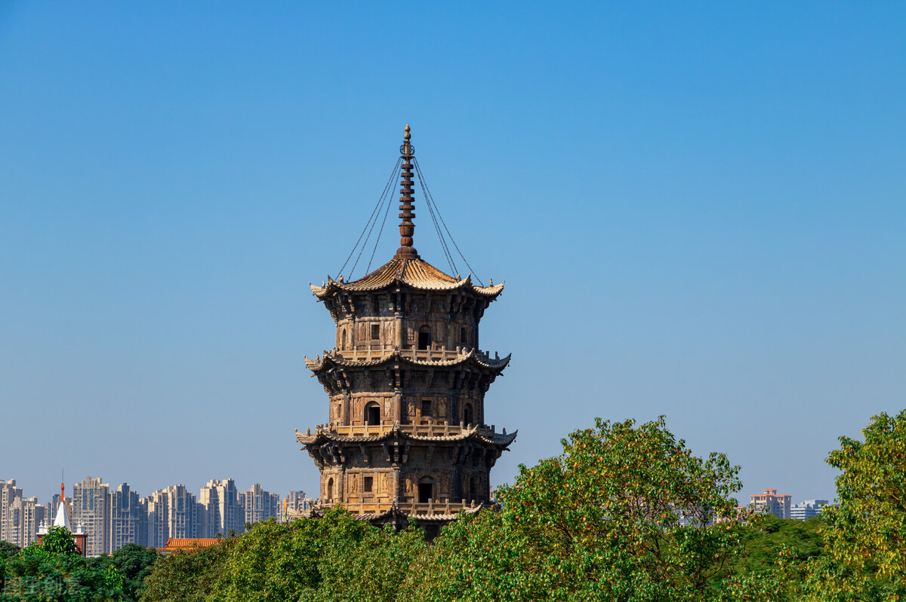
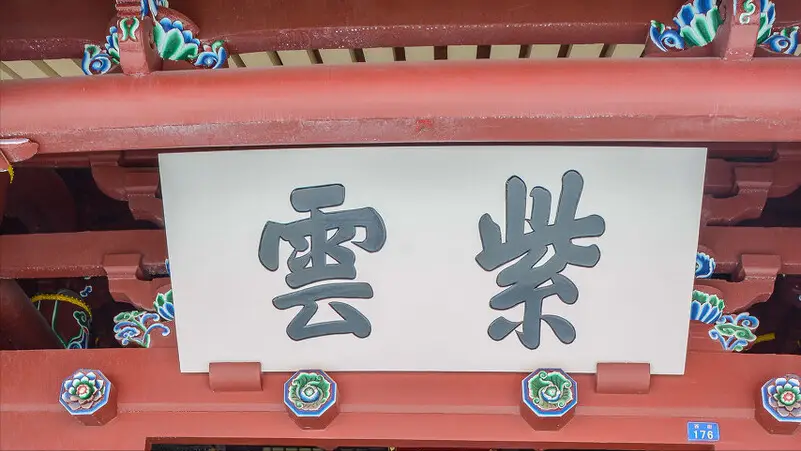
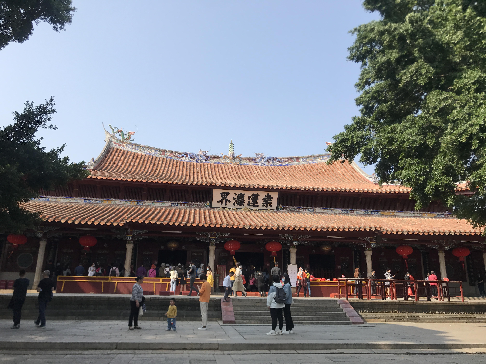
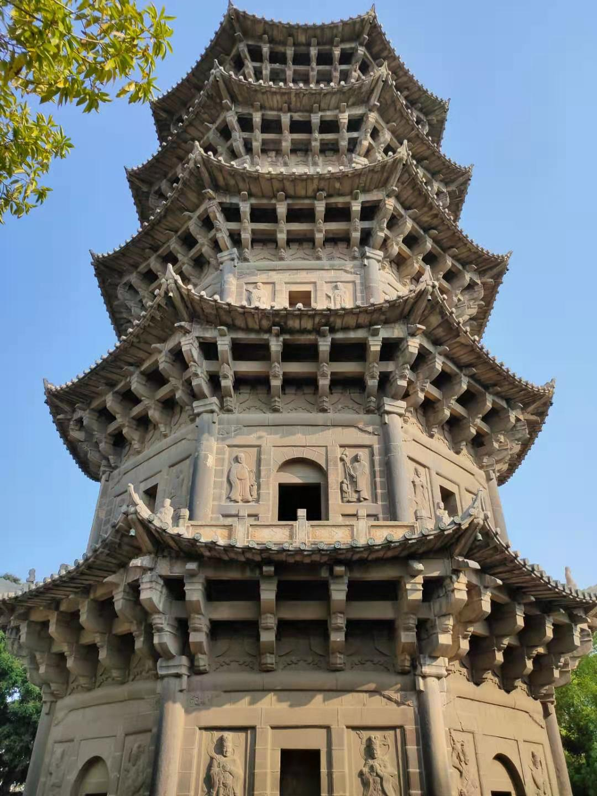
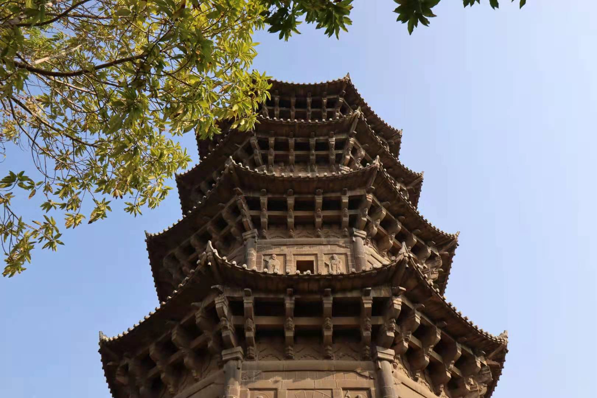

泉州历史悠久，古时候被称作刺桐城，刺桐港是东方乃至于世界第一大港，也是海上丝绸之路的起点。这就导致了大量的海外文化在传播的时候，第一站就是进入泉州，很多的宗教都会将第一个教会设置在例如北京这样的都城，而第二个教会就会设置在泉州。

泉州有的宗教遗迹包括道教、佛教、伊斯兰教、基督教、天主教、景教、印度教、摩尼教、犹太教……无论是你叫得出来的还是叫不出来的，你听过的还是没听过的，在这里都能找到。我们单说一条涂门街，几百米之内就有府文庙、清净寺、通淮关帝庙以及佛教寺庙汇聚在一起，相安无事。所以泉州被称为“世界宗教博物馆”是当之无愧的。
泉州文化包容并存最明显的一个景点，应该要算是清源山了。清源山是泉州十八景之一，又被称为是泉州或者齐云山，其内有36洞天，18胜景。其中包含了道教、佛教、儒家、伊斯兰教、摩尼教的景点，可以说是泉州这个世界宗教博物馆的主展厅了。
道教的“老子天下第一老君岩”石像；佛教的“弘一法师舍利塔”、千手岩；藏传密宗佛教的“三世佛”；儒家的魁星阁“文昌五夫子图”；伊斯兰教的“灵山圣墓”；摩尼的“呼禄法师墓”等等。如果要逛清源山的话，还是需要一个导游给你讲述清源山景点的文化，不然的话乐趣至少要减少一大半了。

除了清源山以外，开元寺也是来泉州旅游的朋友必去的一个景点，位于西街当中，里面的东西双塔可以说是泉州的地标性建筑了。在进入开元寺之前，可以先去一个隐藏景点，那就是开元寺斜对面的游客服务中心，可以眺望到东西双塔的景色。

开元寺正面挂着“紫云”二字，正对面的石壁（照墙）上书“紫云屏”。这个“紫云”一个说法是在建寺的时候有紫云覆地，遂名紫云。而另一个比较靠谱的说法是，这个“紫云”是“黄氏”的堂号，江夏紫云黄氏。因为相传泉州开元寺的檀越主是黄守恭，因此挂着其堂号。

刚进开元寺的山门，也就是天王寺，我们可以看到柱子上挂着一副很出名的对联“此地古称佛国，满街都是圣人”，这个对联最早是出自南宋大理学家朱熹，而后是有弘一法师书写的。记得似乎在大雄宝殿也挂了这副对联。此外天王寺两边的密迹金刚也可以关注一下，他们的形象与传统的四大天王有些不同，被人戏称为哼哈二将。

最后就是我们的东西双塔了，东西双塔是我国现存的最高的一对石塔，东为“镇国塔”，高48.27米，西为“仁寿塔”，高45.06米。镇国塔更高一些，也更精致一些，最开始是木质塔，后来改为了砖塔，再后来才改为了楼阁式仿木结构的花岗岩石塔。

东西双塔高五层，据说地下还有两层，因为七级浮屠嘛，因为其地下有两层，所以稳固性更超过一半的建筑，相传曾经经历了八级地震（应该指的是明朝万历年的那次地震）而不倒，至今为止屹然挺立，是泉州古城最独特的标志象征。